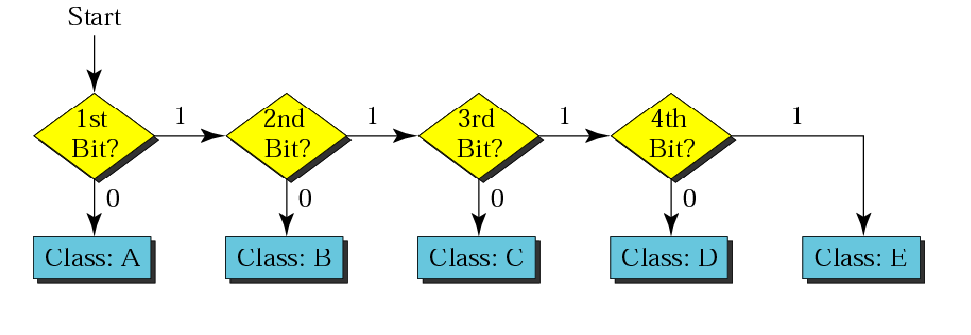
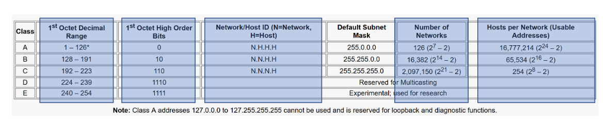
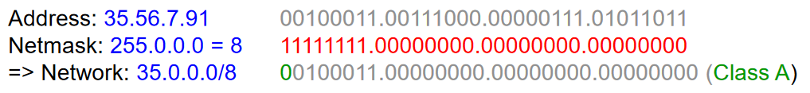
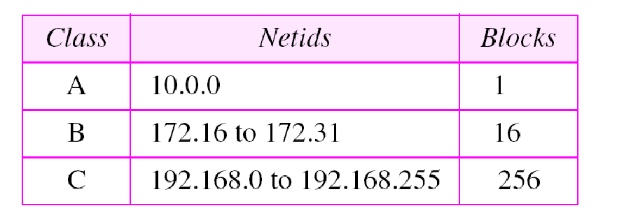

Network Addressing
Port address
Used to identify the source and destination processes for communication
MAC address(Physical address)
- Universally unique address
- 48 bit long
- first 3 bytes - OUI (Organizationally Unique Identifier)
- last 3 bytes - NIC (Network Interface Controller)
IP address(Logical address)
IPv4 --> 32bit
IPv6 --> 128bit
Find IP Classes


Find net IP
IP AND subnet mask

Direct Broadcast Address
The direct broadcast address is used by router to send a message to every host on a local network
Private IP address

Who has the authority to reserve IP addresses to each ISP?
ICANN